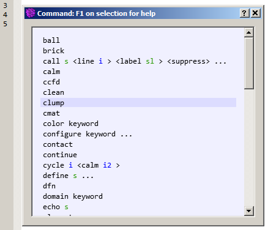
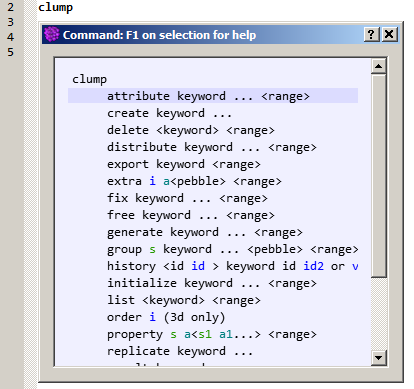
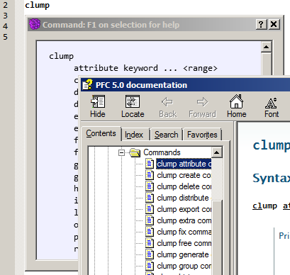
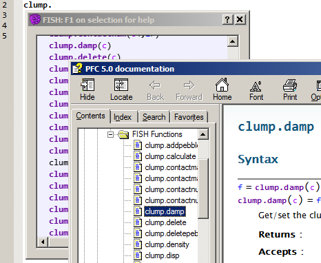
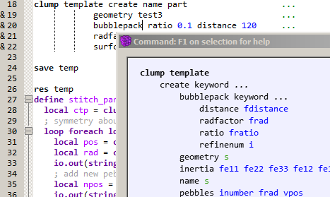

内联帮助
在 PFC 编辑器中编辑数据文件时，快速查阅与某条命令相关联的关键字、或查询 FISH 函数的语法，可能会很有用。Ctrl+Space 组合键提供了用于完成此类任务的一个有用的新功能。
在空行上按 Ctrl+Space 时，将显示所有顶层命令关键字：

可以使用鼠标或按向下方向键在列表中滚动。选择列表中的某个条目（通过按 Enter 或双击该条目）会将关键字放到数据文件中的当前位置：

在此类操作后，编辑器即变为可输入状态；也可以从列表中选择另一个词插入，以交互方式构建命令。还可以选择列表中的某个条目并按 F1 键，以查看相关的帮助：

要关闭此窗口，可将光标移到编辑器中的新行，或再次按 Ctrl+Space 组合键。
FISH 也启用了相同的功能。输入完整的 FISH 词并在其后加上点（‘.’），即可看到可用函数列表，然后对某个条目按 F1 以查看相关的帮助。

在检查复杂数据文件时，可以使用此实用工具：将鼠标移到所关注的关键字（或 FISH 函数）所在位置，然后按 Ctrl+Space 查看相关信息。

| 这些内容对您有帮助吗？… | FLAC3D © 2019, Itasca | 原文更新于 2020 年 10 月 8 日 |